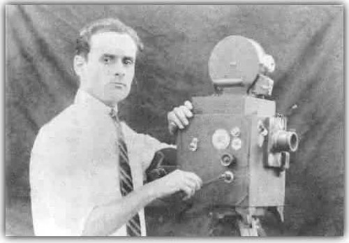
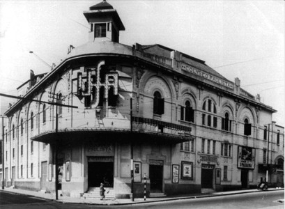

Nossa história começou logo quando, na década de 1890, ocorreu a primeira exibição cinematográfica do Brasil. Nesta ocasião, encontrava-se presente Valdemir Perereira da Silva. A amostra era apenas para membros da alta sociedade carioca. Valdemir, um humilde faxineiro do teatro municipal do Rio de Janeiro, maravilhou-se ao espiar pela pequena fresta a sala onde ocorria a exibição.
A transgreção pontual tornou-se um hábito. Valdemir sentia-se capturado pelas imagens sequenciais que produziam ritmo, histórias e emoções. Ao passar do tempo, começou a colecionar as fitas antigas que seriam descartadas, e seu interesse chamou atençao do projetista, que passou a mostra-lo como eram realizadas as projeções. Poucos anos depois, se candidatara a uma vaga de projetista de um novo cinema que abrira no centro da cidade. Tanto pela sua destreza ao manusear as fitas como pela sua paixão pela sétima arte, Valdemir destacou-se dos demais candidatos e foi logo contratado.
Pouco tempo depois, seu filho, Pedro, nasceu. Toda a infancia de Pedro fora vivida majoritariamente dentro do cinema onde trabalhava seu pai. E assim, cresceu fascinado com este mundo. Quando adolescente, passou a ajudar o pai em seu ofício.
Ao longo dos anos, Valdemir juntou uma vasta coleção de fitas, bem como dinheiro suficiente para comprar seu próprio conjunto de lousa e projetor. Infelizmente, pouco tempo depois da aquisição de seus sonhos, Valdemir adoeceu seriamente. Após alguns meses internado, veio a falecer.
O jovem Pedro, recém casado e aguardando uma filha, manteve a coleção do pai e assumiu seu posto como projetista no velho cinema. Os anos não foram gentis com ele e sua família. Foram duros 15 anos em que a renda mal conseguia alimentá-los. Seus únicos momentos de felicidade era quando, nas épocas de festividades, os familiares e amigos se reuniam para assistir as velhas fitas de Pedro e seu pai. Foi numa noite dessas que Lúcia, filha de Pedro, com seus 13 anos, teve a ideia de tornar estas festividades em negócios. Ainda levou uns meses para convencer o pai. Ele duvidava que aqueles antigos filmes atrairiam algum público. Porém, com a situação financeira cada vez mais complicada, resolveu enfim arriscar.
Pedro continou trabalhando no durante os dias úteis como projetista, e nos fins de semana realizava em casa suas exibições. A enormidade do público surpreendeu até Lúcia. Em pouco tempo espalhou-se a noticia, e a cada semana sua cliente-la aumentava. Aos poucos a vida começava a melhorar. Em cerca de dois anos, conseguiram comprar um teatro velho e com uma pequena reforma passaram a utiliza-lo para exibir os filmes. Pedro saiu de seu emprego como projetista a passou a se dedicar completamente ao cinema. Depois de alguns anos já compravam as próprias fitas, contratavam pessoal e renovavam os materiais. Naturalmente, Lúcia seguiu o negócio da família e, após o pai falecer vítima de um acidente de carro, assumiu completamente as rédeas do estabelecimento.
Lúcia abria novas franquias com frequência, e sua visão não deixava com que o cinema se torna-se obsoleto. Assim, expandindo aos poucos, Lúcia Pereira Marquez da Silva transformou o saudoso Cinema Pereira na gigante PopCine.
|  |  |